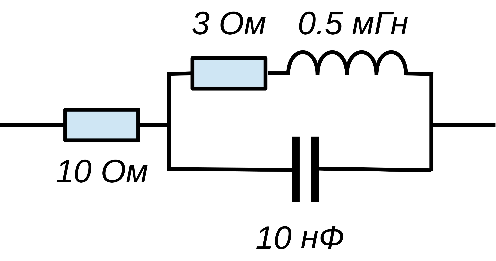

До сих пор мы не указывали типы у аргументов функций и возвращаемых ими значений. Но Haskell — статически типизированный язык, а это значит, что все выражения в программе имеют определённый тип, который известен на этапе компиляции программы. Мы могли позволить себе не указывать типы, поскольку они выводятся компилятором автоматически и это одно из следствий и преимуществ чистоты языка.
:t :t 'a' :t ['a','b','c'] :t "Hello" :t 56 :t [2, 45, 6, 7] :t [1 .. 5] :t ('a',4) :t 2 < 3 :t (< 3) :t (==) :t (+) :t (+ 2) :t sin :t id :t ($) :t (.) :t integrate :t (\x -> x) :t (\x y -> x) :t (\x y -> x + y)
:i :i Char :i String :i Bool :i Int :i []
Cм. Классы типов.
:i:i Show :i Eq :i Ord :i Num :i Floating
Несмотря на то, что компилятор хорошо справляется с выводом типов, указывать явно тип определяемой в программе функции полезно. Это, во-первых, хорошая документация к функции. Во вторых, при работе с полиморфными функциями и типами, иногда компилятору требуются некоторые подсказки.
- Каждая функция должна делать только одно дело, но делать его хорошо.
- Полиморфные функции лучше специальных.
- Тотальные функции лучше функций, вызывающих исключения.
- Структура типов должна отражать логику и универсальные свойства моделируемых объектов, а не моделировать сами объекты.
- "Не готовьте еду при клиенте". Клиент — это внешний мир, с которым мы общяемся с помощью операций ввода-вывода или связываясь по протоколам. Чистые функции полностью готовят решение внутри себя, а потом предлагают его внешнему миру.
Общий подход к решению реальных (и учебных) задач, предлагаемый функциональным программированием состоит в следующем:
- разбиваем задачу на отдельные очень небольшие, логически замкнутые и чистые подзадачи, определяя метод их комбинирования;
- определяем, вычисляем или выясняем тип функций, представляющих решение этих подзадач;
- пишем прототипы функций и тестируем их в REPL;
- комбинируем подзадачи для решения общей задачи;
- на последнем этапе создаём связь с внешним миром — ввод/вывод.
Описание электрических цепей
На этом занятии мы научимся использовать типы для описания сложных данных и создадим небольшой встроенный предметно-ориентированный язык (EDSL), для описания и моделирования достаточно широкого класса электрических цепей.
Определим тип для представления произвольной двухполюсной электрической цепи, которая может состоять из сопротивлений (с номиналами типа Double) и допускает последовательное или параллельное соединение элементов цепи.
data Circuit = R Double | Par Circuit Circuit | Seq Circuit Circuit deriving Show
Например:
-- сопротивление номиналом 20 Ом R 20 -- последовательное соединение двух сопротивлений R 100 `Seq` R 10 -- параллельное соединение двух сопротивлений R 100 `Par` R 10

Цепь 1.
При рассчёте сопротивления цепей используются следующие формулы: при последовательном подключении элементов складываются значения сопротивлений, а при параллельном подключении складываются проводимости:
resistance, которая вычисляла бы суммарное сопротивление произвольной двухполюсной цепи.
resistance :: Circuit -> Double
Вариант решения
resistance :: Circuit -> Double resistance c = case c of R r -> r Par c1 c2 -> 1/(1/resistance c1 + 1/resistance c2) Seq c1 c2 -> resistance c1 + resistance c2
resistance сопротивление цепи 1.
Circuit элемент Key, соответствующий ключу. При этом замкнутому состоянию ключа пусть соответствует нулевое, а разомкнутому — бесконечное сопротивление (его можно получить с помощью выражения 1/0). Поместите вместо элементов с номиналами 11 и 7 ключи, и вычислите сопротивление цепи, при различных сочетаниях их состояний.isConnected, которая бы возвращала ответ на вопрос: замкнута цепь или нет.Проверьте работу этой функции при различных сочетаниях состояний ключей.isConnected :: Circuit -> Bool
Тип для сопротивления
Использование бесконечного значения для представления разомкнутой цепи чревато неприятностями, оно не очень красиво и не позволит работать с произвольными (невещественными) числами. Правильным и идиоматичным функциональным путём будет определить отдельный тип, описывающий состояние цепи в электротехнических терминах.
Resistance, который может представлять разомкнутую цепь Break, цепь, замкнутую накоротко Short и цепь, обладающую конечным сопротивлением Value Double.Resistance определите операции параллельного (<||>) и последовательного (<&&>) соединения. Переопределите функцию(<||>),(<&&>) :: Resistance -> Resistance -> Resistance
resistance так, чтобы она возвращала тип Resistance. Напишите короткое определение функции isConnected, использующее результат функции resistance.При расчёте электрических цепей переменного тока роль сопротивления играет импеданс, который выражается комплексным числом. Для цепей переменного тока следует добавить реактивные элементы: ёмкости и индуктивности. Импеданс ёмкости
Resistance так, чтобы кроме типа Double он мог содержать в себе произвольные типы. Добавьте в тип Circuit представление для ёмкости и индуктивности — типы C Double и L Double. Опишите с помощью этого типа цепь 2, показанную на рисунке:
Цепь 2.
resistance так, чтобы она могла обрабатывать ёмкости и индуктивности. Для постоянного тока конденсаторы соответствуют разрыву цепи, а катушки индуктивности — короткому замыканию. Вычислите активное сопротивление цепи 2.Подключим к программе модуль Data.Complex, добавив в самом начале программы строчку:
Комплексное число конструируется с помощью оператораimport Data.Complex
:+ таким образом:
Комплексные числа с нулевой мнимой частью обозначаются простыми числовыми литералами.2 :+ 3 -- 2 + 3i 0 :+ 1 -- i
impedance, имеющей типи вычислите импеданс для цепи 2. В полученном комплексном числе действительная часть должна быть равна активному сопротивлению цепи, а мнимая — реактивному (волновому).impedance :: Circuit -> Double -> Resistance (Complex Double)
Алгебра Де Моргана
Мы построили тип, описывающий внутреннюю структуру результата, в нашем случае, сопротивления. Это не просто число, оно может принимать различные по смыслу значения, которые по-разному комбинируются друг с другом.
Если внимательно посмотреть на определения операторов (<||>) и (<&&>), то можно заметить их сходство с логическими операторами над булевыми значениями. Если исключить из рассмотрения величины Value, то получатся точные определения логических операций И и ИЛИ, где роль True и False играют Short и Break, соответственно. Такое совпадение структур позволяет использовать то, что мы знаем о логике. В частности, закон де Моргана.
Осталось определить понятие отрицания для сопротивления. Это проводимость, — величина, обратная сопротивлению. Ведь при параллельном соединении складываются именно проводимости, значит наша догадка верна!
То, что такие различные вещи, как логика и сопротивления образуют одинаковую алгебру, может показаться неожиданным, но это очень характерно для математики. Этим можно воспользоваться, определив свой собственный класс типов для всех объектов, для которых работает наша алгебра.
class DeMorgan a where {-# MINIMAL inv, (zero| one), ((&&) | (||)) #-} inv :: a -> a zero :: a zero = inv one one :: a one = inv zero (&&) :: a -> a -> a a && b = inv (inv a || inv b) (||) :: a -> a -> a a || b = inv (inv a && inv b)
В этом определении для класса приводятся не только типы элементов и операций, необходимых для алгебры, но и способ их определения по умолчанию. Это позволяет ограничиться определением только минимального набора при объявлении экземпляра класса DeMorgan. Вот как это делается для типа Resisitance
instance Fractional a => DeMorgan (Resistance a) where zero = Break inv Short = Break inv Break = Short inv (Value r) = Value (1/r) Break && _ = Break Short && r = r Value a && Value b = Value $ a + b a && b = b && a
Здесь мы явно определили только необходимый минимум, остальные операции и значения определяются автоматически. Легко определить экземпляр этого класса для типа Bool, но из соображений эффективности стоит дать явные определения всем элементам класса::
instance DeMorgan Bool where zero = False one = True inv = not True && x = x False && _ = False True || _ = True False || x = x
Для того, чтобы переопределить операторы (&&) и (||) нужно в самом начале модуля добавить строчку импорта:
import Prelude hiding ((&&), (||))
Нечёткая логика — это расширение булевой алгебры на вещественные величины на отрезке min, операции ИЛИ — max, а отрицание вычисляется как функция
DeMorgan для типа Zadeh, содержащий вещественные числа:
newtype Zadeh = Zadeh Double deriving Show
Вариант решения
instance DeMorgan Zadeh where zero = Zadeh 0 inv (Zadeh x) = Zadeh $ 1 - x Zadeh v1 && Zadeh v2 = Zadeh $ min v1 v2
Другой вариант ближе к вероятностному подходу. В нём операция отрицания та же, что и в логике Задэ, а вероятность того, что произойдут два события равна произведению их вероятностей.
Fuzzy для этого варианта нечеткой логики и объявите его экземпляром класса DeMorgan. Пользуясь правилом Де Моргана выясните как должна вычисляться вероятность того, что что произойдёт одно или другое событие.0.5 && 0.5 0.5 || 0.5 0.25 && 1 0.25 || 1 0.25 || 0.75 && 0.3 0.3 && (0.2 || 0.5) || 0.8 && (0.2 || 0.5 || 0.1)
zero и one образуют обычную булеву алгебру.xor) и импликацию ЕСЛИ – ТО (==>) для всех экземпляров класса DeMorgan. Проверьте, что они работают корректно для нечёткой логики.Алгебру Де Моргана, образуют темпы выполнения задач системой исполнителей. Школьные задачи про бассейны с трубами или про рабочих с канавами решаются в алгебре, образуемой значениями типа изоморфного типу Resistance. Например, такая задача: "Один рабочий способен выкопать канаву за 3 часа, второй — за 5 часов. За какое время будет выкопана та же канава обоими рабочими одновременно? А сколько времени им потребуется, если сначала половину канавы выкопает один рабочий, а потом вторую половину — другой?", решается следующими вычислениями:
Value 3 || Value 5 Value 1.875 Value (3/2) && Value (5/2) Value 4.0
рабочие | A | B | C | ------------------- этапы I | 56 | 48 | 52 работы II | 12 | 17 | 18
Вариант решения
-- информация о призводительности работников a 1 = Value 56 a 2 = Value 12 b 1 = Value 48 b 2 = Value 17 c 1 = Value 52 c 2 = Value 18 -- первый этап выполняется параллельно работниками A и B -- второй только работником С -- (a 1 || b 1) && c 2
Это очень простые задачи, но для большого числа этапов работ и исполнителей, ещё и с дополнительными ограничениями, найти оптимальную схему уже становится непросто. Мы рассмотрим способы их решения, когда обратимся к методам логического программирования.
Метод бисекции
Поиск резонанса, как и решение произвольного алгебраического уравнения, можно и нужно автоматизировать. Для этого стоит воспользоваться универсальным и надёжным методом деления отрезка пополам, или методом бисекции. Он состоит в следующем:
- задан отрезок
(a,b) ; - задано условие
p , которое в некоторой точке на отрезке меняет значение (например, меняется знак числовой функции); - если
p(a) = p(b) , считаем, что искомой точки на отрезке нет; - если отрезок достаточно мал, решением является его средняя точка;
- в противном случае решение находится либо в правой, либо в левой половине отрезка.
bisection p a b, которая методом деления отрезка пополам, находит точку на отрезке (a,b), такую, что условие p в ней изменяется. При этом, если на указанном отрезке искомой точки не обнаруживается, функция должна возвращать значениеbisection :: Eq a => (Double -> a) -- тестовая функция -> (Double, Double) -- начальный интервал -> Maybe Double
Nothing (посмотрите определение типа Maybe с помощью команды интерпретатора :i). Относительная точность Схема решения
bisection p (a, b) -- тестовая функция p не меняется на границах интервала | ... = Nothing -- достигнута абсолютная или относительная погрешность | ... = Just c -- шаг бисекции | otherwise = case bisection p (a, c) of Nothing -> bisection p (c, b) Just c -> Just c where c = mean a b
bisection (\x -> x < 2) (1, 3) bisection (\x -> x < 2) (0, 1) bisection (\x -> x < 2000) (0, 1000000) bisection (\x -> x < 2e6) (0, 1e9) bisection (\x -> x^2 < 2) (1, 2) bisection (\x -> (x-2)*(x-5) < 0) (1, 3) bisection (\x -> (x-2)*(x-5) < 0) (1, 13) bisection (\x -> cos x > 1 - 1/x) (0, 2) bisection (\x -> 1/x > 0) (-1, 2) bisection (\x -> isNaN (sqrt (3 - x^2))) (0, 2)
и припишите к описанию типа{-# LANGUAGE DeriveFunctor #-}
Resistance указания для вывода экземпляров класса Eq и Functor: О функторах ми поговорим несколько позже, но уже сейчас будет понятно, как мы расширили функциональность типаderiving (Show, Eq, Functor)
Resistance — теперь для него определен оператор <$>, позволяющий изменять значение внутри типа:
(2 *) <$> Value 5 Value 10 (2 *) <$> Break Break
resonance, отыскивающую для цепи резонансную частоту в указанных пределах.resonance :: Circuit -> (Double, Double) -> Maybe Double